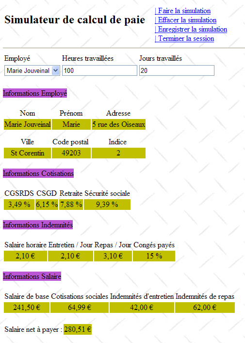
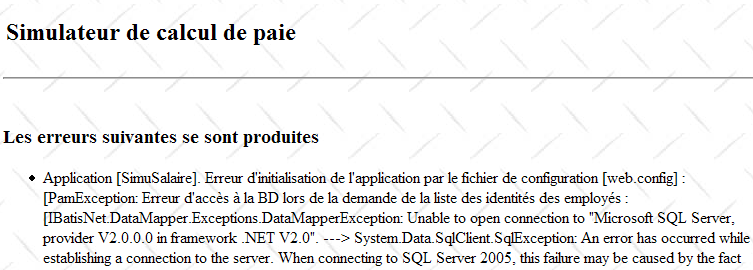

8. تطبيق [SimuPaie] – الإصدار 4 – ASP.NET / متعدد العروض / صفحة واحدة
قراءات موصى بها: مرجع [1]، تطوير WEB باستخدام ASP.NET 1.1، الفقرات:
-
مكونات الخادم ووحدة التحكم في التطبيق
-
أمثلة على تطبيقات MVC مع مكونات الخادم ASP
نحن ندرس الآن نسخة مشتقة من التطبيق ASP.NET ثلاثي الطبقات الذي تمت دراسته سابقًا والذي يضيف إليه وظائف جديدة. تتطور بنية تطبيقنا على النحو التالي:
 |
تتم معالجة طلب العميل وفقًا للخطوات التالية:
- يقدم العميل طلبًا إلى التطبيق.
- يقوم التطبيق بمعالجة هذا الطلب. وللقيام بذلك، قد يحتاج إلى مساعدة الطبقة [métier] التي قد تحتاج بدورها إلى الطبقة [dao] إذا كان من الضروري تبادل البيانات مع قاعدة البيانات. يتلقى التطبيق ردًا من الطبقة [métier].
- وبناءً على ذلك، تختار (3) العرض (= الرد) الذي سيتم إرساله إلى العميل وتزوده (4) بالمعلومات (القالب) التي يحتاجها.
- يتم إرسال الرد إلى العميل (5)
لدينا هنا بنية ويب تسمى MVC (النموذج – العرض – وحدة التحكم):
- [Application] هو وحدة التحكم. ترى جميع طلبات العميل تمر عبرها.
- [Saisies, Simulation, Simulations, ...] هي العروض. العرض في .NET هو كود ASP / HTML قياسي يحتوي على مكونات يجب تهيئتها. تشكل القيم التي يجب توفيرها لهذه المكونات نموذج العرض.
سنقوم هنا بتنفيذ نمط التصميم (design pattern) MVC بالطريقة التالية:
- ستكون العروض مكونات [View] ضمن صفحة واحدة [Default.aspx]
- وبالتالي، فإن وحدة التحكم هي الكود [Default.aspx.cs] لهذه الصفحة الفريدة.
لا يمكن إلا للتطبيقات الأساسية دعم هذا التنفيذ MVC. في الواقع، عند كل طلب، يتم إنشاء مثيلات لجميع مكونات الصفحة [Default.aspx]، وبالتالي جميع العروض. عند إرسال الرد، يتم اختيار إحدى هذه العروض بواسطة كود التحكم في التطبيق ببساطة عن طريق إظهار المكون [View] المقابل وإخفاء الباقي. إذا كان التطبيق يحتوي على العديد من العروض، فستحتوي الصفحة [Default.aspx] على العديد من المكونات وقد تصبح تكلفة إنشاء مثيل لها باهظة. علاوة على ذلك، قد يصبح وضع الصفحة [Design] غير قابل للإدارة بسبب وجود عدد كبير جدًا من العروض. هذا النوع من البنية مناسب للتطبيقات التي تحتوي على عدد قليل من العروض والتي تم تطويرها بواسطة شخص واحد. عندما يمكن اعتمادها، فإنها تسمح بتطوير بنية MVC ببساطة شديدة. وهذا ما سنراه في هذه النسخة الجديدة.
8.1. طرق عرض التطبيق
ستكون العروض المختلفة المعروضة للمستخدم كما يلي:
- العرض [VueSaisies] الذي يعرض نموذج المحاكاة
 |
- عرض [VueSimulation] المستخدم لعرض النتيجة التفصيلية للمحاكاة:
 |
- عرض [VueSimulations] الذي يعرض قائمة بالمحاكاة التي أجراها العميل
 |
- عرض [VueSimulationsVides] الذي يشير إلى أن العميل ليس لديه محاكاة أو لم يعد لديه محاكاة:
 |
- عرض [VueErreurs] الذي يشير إلى وجود خطأ واحد أو أكثر:
 |
8.2. مشروع Visual Web Developer للطبقة [web]
مشروع Visual Web Developer للطبقة [web] هو التالي:
 |
- في [1] نجد:
- ملف التكوين [Web.config] للتطبيق – وهو مطابق لملف التكوين الخاص بالتطبيق السابق.
- ملف [Global.cs] الذي يدير أحداث تطبيق الويب، وهنا بدء تشغيله - مطابق لملف التطبيق السابق باستثناء أنه يدير أيضًا بدء جلسة عمل المستخدم.
- نموذج التطبيق [Default.aspx] – يحتوي على طرق العرض المختلفة للتطبيق.
- في [2] نجد مراجع المشروع – وهي مطابقة لتلك الموجودة في الإصدار السابق
8.3. الملف [Global.cs]
الملف [Global.cs] الذي يدير أحداث تطبيق الويب، مطابق لتلك الموجودة في التطبيق السابق باستثناء أنه يدير أيضًا بدء جلسة عمل المستخدم:
Global.cs
using System;
using System.Web;
using Pam.Dao.Entites;
using Pam.Metier.Service;
using Spring.Context.Support;
using System.Collections.Generic;
using istia.st.pam.web;
namespace pam_v4
{
public class Global : HttpApplication
{
// --- بيانات ثابتة للتطبيق ---
public static Employe[] Employes;
public static string Msg = string.Empty;
public static bool Erreur = false;
public static IPamMetier PamMetier = null;
// بدء تشغيل التطبيق
public void Application_Start(object sender, EventArgs e)
{
...
}
// بدء جلسة عمل المستخدم
public void Session_Start(object sender, EventArgs e)
{
// يتم وضع قائمة محاكاة فارغة في الجلسة
Session["simulations"] = new List<Simulation>();
}
}
}
- الأسطر 27-34: ندير بدء الجلسة. سنضع في هذه الجلسة قائمة المحاكاة التي أجراها المستخدم.
- السطر 30: يتم إنشاء قائمة محاكاة فارغة. المحاكاة هي كائن من النوع [Simulation] سنشرحه بالتفصيل لاحقًا.
- السطر 31: يتم وضع قائمة المحاكاة في الجلسة المرتبطة بالمفتاح "simulations"
8.4. الفئة [Simulation]
يستخدم كائن من النوع [Simulation] لتغليف سطر من جدول المحاكاة:
|
ورمزه هو التالي:
namespace Pam.Web
{
public class Simulation
{
// بيانات محاكاة
public string Nom { get; set; }
public string Prenom { get; set; }
public double HeuresTravaillees { get; set; }
public int JoursTravailles { get; set; }
public double SalaireBase { get; set; }
public double Indemnites { get; set; }
public double CotisationsSociales { get; set; }
public double SalaireNet { get; set; }
// المنشئون
public Simulation()
{
}
public Simulation(string nom, string prenom, double heuresTravailllees, int joursTravailles, double salaireBase, double indemnites, double cotisationsSociales, double salaireNet)
{
{
this.Nom = nom;
this.Prenom = prenom;
this.HeuresTravaillees = heuresTravailllees;
this.JoursTravailles = joursTravailles;
this.SalaireBase = salaireBase;
this.Indemnites = indemnites;
this.CotisationsSociales = cotisationsSociales;
this.SalaireNet = salaireNet;
}
}
}
}
تتوافق حقول الفئة مع أعمدة جدول المحاكاة.
8.5. الصفحة [Default.aspx]
8.5.1. نظرة عامة
تحتوي الصفحة [Default.aspx] على عدة مكونات [View]، واحد لكل عرض. هيكلها كما يلي:
<%@ Page Language="C#" AutoEventWireup="true" CodeFile="Default.aspx.cs" Inherits="pam_v4.PagePam" %>
<!DOCTYPE html PUBLIC "-//W3C//DTD XHTML 1.0 Transitional//EN" "http://www.w3.org/TR/xhtml1/DTD/xhtml1-transitional.dtd">
<html xmlns="http://www.w3.org/1999/xhtml">
<head id="Head1" runat="server">
<title>Simulateur de paie</title>
</head>
<body background="ressources/standard.jpg">
<form id="form1" runat="server">
<asp:ScriptManager ID="ScriptManager1" runat="server" EnablePartialRendering="true" />
<asp:UpdatePanel runat="server" ID="UpdatePanelPam" UpdateMode="Conditional">
<ContentTemplate>
<table>
<tr>
<td>
<h2>
Simulateur de calcul de paie</h2>
</td>
<td>
<label>
 </label>
<asp:UpdateProgress ID="UpdateProgress1" runat="server">
<ProgressTemplate>
<img src="images/indicator.gif" />
<asp:Label ID="Label5" runat="server" BackColor="#FF8000"
EnableViewState="False" Text="Calcul en cours. Patientez ....">
</asp:Label>
</ProgressTemplate>
</asp:UpdateProgress>
</td>
<td>
<asp:LinkButton ID="LinkButtonFaireSimulation" runat="server"
CausesValidation="False" OnClick="LinkButtonFaireSimulation_Click">
| Faire la simulation<br /></asp:LinkButton>
<asp:LinkButton ID="LinkButtonEffacerSimulation" runat="server"
CausesValidation="False" OnClick="LinkButtonEffacerSimulation_Click">
| Effacer la simulation<br /></asp:LinkButton>
<asp:LinkButton ID="LinkButtonVoirSimulations" runat="server"
CausesValidation="False" OnClick="LinkButtonVoirSimulations_Click">
| Voir les simulations<br /></asp:LinkButton>
<asp:LinkButton ID="LinkButtonFormulaireSimulation" runat="server"
CausesValidation="False" OnClick="LinkButtonFormulaireSimulation_Click">
| Retour au formulaire de simulation<br /></asp:LinkButton>
<asp:LinkButton ID="LinkButtonEnregistrerSimulation" runat="server"
CausesValidation="False" OnClick="LinkButtonEnregistrerSimulation_Click">
| Enregistrer la simulation<br /></asp:LinkButton>
<asp:LinkButton ID="LinkButtonTerminerSession" runat="server"
CausesValidation="False" OnClick="LinkButtonTerminerSession_Click">
| Terminer la session<br /></asp:LinkButton>
</td>
</table>
<hr />
<asp:MultiView ID="Vues1" ActiveViewIndex="0" runat="server">
<asp:View ID="VueSaisies" runat="server">
...
</asp:View>
</asp:MultiView>
<asp:MultiView ID="Vues2" runat="server">
<asp:View ID="VueSimulation" runat="server">
...
</asp:View>
<asp:View ID="VueSimulations" runat="server">
...
</asp:View>
<asp:View ID="VueSimulationsVides" runat="server">
...
</asp:View>
<asp:View ID="VueErreurs" runat="server">
...
</asp:View>
</asp:MultiView>
</ContentTemplate>
</asp:UpdatePanel>
</form>
</body>
</html>
- السطر 10: العلامة لترتيب ملحقات Ajax
- الأسطر 11-73: الحاوية UpdatePanel التي يتم تحديثها بواسطة استدعاءات Ajax
- الأسطر 12-72: محتوى الحاوية UpdatePanel
- الأسطر 13-52: العنوان الذي سيظهر في كل عرض. يعرض للمستخدم قائمة الإجراءات الممكنة في شكل قائمة روابط.
- السطر 33: لاحظ السمة CausesValidation="False" التي تجعل مدققات صحة الصفحة لا تُنفَّذ ضمناً عند النقر على الرابط. وعندما تكون هذه السمة غائبة، تكون قيمتها الافتراضية هي True. يمكن إجراء التحقق من صحة الصفحة بشكل صريح في الكود الذي يتم تنفيذه على جانب الخادم من خلال العملية Page.Validate.
- الأسطر 53-57: مكون [MultiView] مع عرض واحد [VueSaisies]. ولهذا السبب، تم تضمين رقم العرض المراد عرضه بشكل ثابت في السطر 53: ActiveViewIndex="0"
- الأسطر 53-67: مكون [MultiView] مع أربع طرق عرض: طريقة العرض [VueSimulation] في الأسطر 59-61، الطريقة [VueSimulations] في الأسطر 62-64، الطريقة [VueSimulationsVides] في الأسطر 65-67، الطريقة [VueErreurs] في الأسطر 68-70. لا يعرض المكون [MultiView] سوى عرض واحد في كل مرة. لعرض العرض رقم i للمكون Vues2، سنكتب الكود:
8.5.2. الرأس
يتكون العنوان من المكونات التالية:
 |
رقم | النوع | الاسم | الدور |
LinkButton | LinkButtonFaireSimulation | طلب حساب المحاكاة | |
LinkButton | LinkButtonEffacerSimulation | مسح نموذج الإدخال | |
LinkButton | LinkButtonVoirSimulations | يعرض قائمة المحاكاة التي تمت بالفعل | |
LinkButton | LinkButtonFormulaireSimulation | العودة إلى نموذج الإدخال | |
LinkButton | LinkButtonEnregistrerSimulation | يسجل المحاكاة الحالية في قائمة المحاكاة | |
LinkButton | LinkButtonTerminerSession | إنهاء الجلسة الحالية |
8.5.3. العرض [Saisies]
المكون [View] المسمى [VueSaisies] هو التالي:
 |
رقم | النوع | الاسم | الدور |
DropDownList | ComboBoxEmployes | يحتوي على قائمة بأسماء الموظفين | |
TextBox | TextBoxHeures | عدد ساعات العمل – العدد الفعلي | |
TextBox | TextBoxJours | عدد أيام العمل – عدد صحيح | |
RequiredFieldValidator | RequiredFieldValidatorHeures | تحقق من أن الحقل [2] [TextBoxHeures] ليس فارغًا | |
RegularExpressionValidator | RegularExpressionValidatorHeures | تحقق من أن الحقل [2] [TextBoxHeures] هو عدد حقيقي >=0 | |
RequiredFieldValidator | RequiredFieldValidatorJours | تحقق من أن الحقل [3] [TextBoxJours] ليس فارغًا | |
RegularExpressionValidator | RegularExpressionValidatorJours | تحقق من أن الحقل [3] [TextBoxJours] هو عدد صحيح >=0 |
8.5.4. العرض [Simulation]
المكون [View] المسمى [VueSimulation] هو التالي:

وهو يتكون فقط من مكونات [Label] التي تم ذكر ID منها أعلاه.
8.5.5. العرض [Simulations]
المكون [View] المسمى [VueSimulations] هو التالي:
 |
رقم | النوع | الاسم | الدور |
GridView | GridViewSimulations | يحتوي على قائمة المحاكاة |
تم تعريف خصائص المكون [GridViewSimulations] على النحو التالي:
 |
- في [1]: انقر بزر الماوس الأيمن على [GridView] / خيار [Mise en forme automatique]
- إلى [2]: اختر نوع العرض لـ [GridView]
 |
- في [3]: حدد خصائص [GridView]
- في [4]: تحرير أعمدة [GridView]
- في [5]: إضافة عمود من النوع [BoundField] سيتم ربطه (bound) بإحدى الخصائص العامة للكائن المراد عرضه في سطر [GridView]. سيكون الكائن المعروض هنا كائنًا من النوع [Simulation].
 |
- في [6]: أدخل عنوان العمود
- في [7]: أدخل اسم خاصية الفئة [Simulation] التي سيتم ربطها بهذا العمود.
- [DataFormatString] يشير إلى كيفية تنسيق القيم المعروضة في العمود.
تتمتع أعمدة المكون [GridViewSimulations] بالخصائص التالية:
رقم | الخصائص |
النوع: BoundField، HeaderText: الاسم، DataField: الاسم | |
النوع: BoundField، HeaderText: الاسم الأول، DataField: الاسم الأول | |
النوع: BoundField، HeaderText: ساعات العمل، DataField: HeuresTravaillees | |
النوع: BoundField، HeaderText: أيام العمل، DataField: JoursTravailles | |
النوع: BoundField، HeaderText: الراتب الأساسي، DataField: SalaireBase، DataFormatString: {0:C} (تنسيق العملة، C=Currency) – سيعرض رمز اليورو. | |
النوع: BoundField، HeaderText: بدلات، حقل البيانات: Indemnites، DataFormatString: {0:C} | |
النوع: BoundField، HeaderText: اشتراكات الضمان الاجتماعي، DataField: CotisationsSociales، DataFormatString: {0:C} | |
النوع: BoundField، HeaderText: الراتب الصافي، DataField: SalaireNet، DataFormatString: {0:C} |
يجب الانتباه إلى أن الحقل [DataField] يجب أن يتطابق مع خاصية موجودة في الفئة [Simulation]. في نهاية هذه المرحلة، تم إنشاء جميع الأعمدة من النوع [BoundField]:
 |
- في [1]: الأعمدة التي تم إنشاؤها لـ [GridView]
- إلى [2]: يجب تعطيل الإنشاء التلقائي للأعمدة عندما يقوم المطور بتعريفها بنفسه كما فعلنا للتو.
يبقى لنا إنشاء عمود الروابط [Retirer]:
 |
 |
- في [1]: إضافة عمود من النوع [CommandField / Supprimer]
- في [2]: ButtonType=Link للحصول على رابط في العمود بدلاً من زر
- في [3]: CausesValidation=False، لن يؤدي النقر على الرابط إلى تنفيذ عمليات التحقق من الصحة التي قد توجد على الصفحة. في الواقع، لا يتطلب حذف محاكاة أي تحقق من البيانات.
- في [4]: سيكون رابط الحذف هو الوحيد المرئي.
- في [5]: نص هذا الرابط
8.5.6. العرض [SimulationsVides]
المكون [View] المسمى [VueSimulationsVides] يحتوي ببساطة على نص:
8.5.7. العرض [Erreurs]
المكون [View] المسمى [VueErreurs] هو التالي:
 |
رقم | النوع | الاسم | الدور |
مكرر | RptErreurs | يعرض قائمة برسائل الخطأ |
يسمح المكون [Repeater] بتكرار رمز ASP.NET / HTML لكل كائن في مصدر بيانات، وعادةً ما يكون مجموعة. يتم تعريف هذا الرمز مباشرةً في شفرة المصدر ASP.NET للصفحة:
<asp:Repeater ID="RptErreurs" runat="server">
<ItemTemplate>
<li>
<%# Container.DataItem %>
</li>
</ItemTemplate>
</asp:Repeater>
- السطر 2: <ItemTemplate> يحدد الرمز الذي سيتم تكراره لكل عنصر في مصدر البيانات.
- السطر 4: يعرض قيمة التعبير Container.DataItem الذي يشير إلى العنصر الحالي في مصدر البيانات. ونظرًا لأن هذا العنصر هو كائن، فإن الطريقة ToString لهذا الكائن هي التي تُستخدم لإدراجه في تدفق HTML للصفحة. ستكون مجموعة الكائنات لدينا عبارة عن مجموعة List(Of String) تحتوي على رسائل الخطأ. ستقوم الأسطر 3-5 بتضمين تسلسلات <li>Message</li> في تدفق HTML للصفحة.
8.6. وحدة التحكم [Default.aspx.cs]
8.6.1. نظرة عامة
لنعد إلى بنية التطبيق MVC:
 |
- [Default.aspx.cs] وهو رمز التحكم في الصفحة الفردية [Default.aspx] هو وحدة التحكم في التطبيق.
- [Global] هو الكائن من النوع [HttpApplication] الذي يقوم بتهيئة التطبيق ويحتوي على مرجع إلى الطبقة [métier].
هيكل كود وحدة التحكم [Default.aspx.cs] هو كما يلي:
using System.Collections.Generic;
...
public partial class PagePam : Page
{
private void setVues(bool boolVues1, bool boolVues2, int index)
{
// يتم عرض العروض المطلوبة
// boolVues1: صحيح إذا كان يجب أن تكون مجموعة العروض Vues1 مرئية
// boolVues1: صحيح إذا كان يجب أن تكون مجموعة العروض Vues2 مرئية
// index: فهرس عرض Vues2 المراد عرضه
...
}
private void setMenu(bool boolFaireSimulation, bool boolEnregistrerSimulation, bool boolEffacerSimulation, bool boolFormulaireSimulation, bool boolVoirSimulations, bool boolTerminerSession)
{
// يتم تعيين خيارات القائمة
// يتم تعيين كل قيمة منطقية إلى خاصية Visible للرابط المقابل
...
}
// تحميل الصفحة
protected void Page_Load(object sender, System.EventArgs e)
{
// معالجة الطلب الأولي
if (!IsPostBack)
{
...
}
}
protected void LinkButtonFaireSimulation_Click(object sender, System.EventArgs e)
{
...
}
protected void LinkButtonEffacerSimulation_Click(object sender, System.EventArgs e)
{
....
}
protected void LinkButtonVoirSimulations_Click(object sender, System.EventArgs e)
{
...
}
protected void LinkButtonEnregistrerSimulation_Click(object sender, System.EventArgs e)
{
...
}
protected void LinkButtonTerminerSession_Click(object sender, System.EventArgs e)
{
...
}
protected void LinkButtonFormulaireSimulation_Click(object sender, System.EventArgs e)
{
...
}
protected void GridViewSimulations_RowDeleting(object sender, GridViewDeleteEventArgs e)
{
...
}
}
عند الطلب الأولي (GET) من المستخدم، يتم معالجة الحدث Load في الأسطر 24-31 فقط. في الطلبات التالية (POST) التي تتم عبر روابط القائمة، تتم معالجة حدثين:
- الحدث Load (24-31) ولكن اختبار القيمة المنطقية Page.IsPostback (السطر 27) يؤدي إلى عدم تنفيذ أي إجراء.
- الحدث المرتبط بالرابط الذي تم النقر عليه:
 |
- الأسطر 33-36: تعالج النقر على الرابط [1]
- الأسطر 38-41: تعالج النقر على الرابط [2]
- الأسطر 43-46: تعالج النقر على الرابط [3]
- الأسطر 58-61: تعالج النقر على الرابط [4]
- الأسطر 48-51: تعالج النقر على الرابط [5]
- الأسطر 53-56: تعالج النقر على الرابط [6]
لتحليل تسلسلات الكود المتكررة، تم إنشاء طريقتين داخليتين:
- setVues، الأسطر 7-14: يحدد العرض أو العروض المطلوب عرضها
- setMenu، الأسطر 16-21: يحدد خيارات القائمة المراد عرضها
8.6.2. حدث Load
قراءات موصى بها: مرجع [1]، التطوير WEB مع ASP.NET 1.1:
- فقرة مكون [Repeater] وربط البيانات.
أول عرض يظهر للمستخدم هو النموذج الفارغ:
 |
تتطلب تهيئة التطبيق الوصول إلى مصدر بيانات قد يفشل. في هذه الحالة، تكون الصفحة الأولى هي صفحة الأخطاء:
 |
يتم معالجة الحدث [Load] بطريقة مشابهة لتلك المستخدمة في الإصدارات السابقة ASP.NET:
// تحميل الصفحة
protected void Page_Load(object sender, System.EventArgs e)
{
// معالجة الطلب الأولي
if (!IsPostBack)
{
// أخطاء في التهيئة؟
if (Global.Erreur)
{
// عرض القسم [erreurs]
...
// تحديد موضع القائمة
...
return;
}
// تحميل أسماء الموظفين في القائمة المنسدلة
...
// وضع القائمة
...
// عرض طريقة عرض [saisie]
...
}
}
السؤال: أكمل الرمز أعلاه
8.6.3. الإجراء: إجراء المحاكاة
فيما يلي، الشاشة المشار إليها بالرقم (1) هي شاشة طلب المستخدم، والشاشة المشار إليها بالرقم (2) هي الرد الذي يرسله إليه تطبيق الويب. من الشاشة الرئيسية، يمكن للمستخدم بدء محاكاة:
 |
 |
 |
قد تبدو الإجراءات التي تعالج هذا الإجراء كما يلي:
protected void LinkButtonFaireSimulation_Click(object sender, System.EventArgs e)
{
// حساب الراتب
// هل الصفحة صالحة؟
Page.Validate();
if (!Page.IsValid)
{
// عرض الصفحة [saisie]
...
return;
}
// الصفحة صالحة - يتم استرداد المدخلات
double HeuresTravaillées = ...;
int JoursTravaillés = ...;
// يتم حساب راتب الموظف
FeuilleSalaire feuillesalaire;
try
{
feuillesalaire = ...
}
catch (PamException ex)
{
// عرض القسم [erreurs]
...
return;
}
// يتم وضع النتيجة في الجلسة
Session["simulation"] = ...
// عرض النتائج
...
// عرض طرق العرض [saisie, employe, salaire]
...
// عرض القائمة
...
}
السؤال: أكمل الكود أعلاه
8.6.4. الإجراء: حفظ المحاكاة
بمجرد الانتهاء من المحاكاة، يمكن للمستخدم طلب تسجيلها:
 |
 |
قد تبدو الإجراءات التي تعالج هذه العملية كما يلي:
protected void LinkButtonEnregistrerSimulation_Click(object sender, System.EventArgs e)
{
// يتم تسجيل المحاكاة الحالية في قائمة المحاكاة الموجودة في الجلسة
...
// عرض المنظر [simulations]
...
}
السؤال: أكمل الرمز أعلاه
8.6.5. الإجراء: العودة إلى نموذج المحاكاة
قراءات موصى بها: المرجع [1]، [Développement WEB avec ASP.NET 1.1 ]: دور الحقل المخفي _VIEWSTATE
بمجرد عرض قائمة عمليات المحاكاة، يمكن للمستخدم طلب العودة إلى نموذج المحاكاة:
 |
تجدر الإشارة إلى أن الشاشة (2) تعرض النموذج كما تم إدخاله. يجب أن نتذكر هنا أن هذه العروض المختلفة تنتمي إلى نفس الصفحة. بين الطلبات المختلفة، يتم الحفاظ على قيم المكونات بواسطة آلية ViewState إذا كانت هذه المكونات لها خاصية EnableViewState إلى true.
قد تبدو الإجراءات التي تعالج هذا الإجراء كما يلي:
protected void LinkButtonFormulaireSimulation_Click(object sender, System.EventArgs e)
{
// عرض المنظر [saisie]
...
// وضع القائمة
...
}
السؤال: أكمل الكود أعلاه
8.6.6. الإجراء: مسح المحاكاة
بمجرد العودة إلى نموذج المحاكاة، يمكن للمستخدم طلب مسح الإدخالات الحالية:
 |
قد تبدو الإجراءات التي تعالج هذا الإجراء كما يلي:
protected void LinkButtonEffacerSimulation_Click(object sender, System.EventArgs e)
{
// RAZ للنموذج
...
}
السؤال: أكمل الكود أعلاه
8.6.7. الإجراء: عرض عمليات المحاكاة
يمكن للمستخدم طلب عرض المحاكاة التي أجراها بالفعل:
 |
 |
قد تبدو الإجراءات التي تعالج هذا الإجراء كما يلي:
protected void LinkButtonVoirSimulations_Click(object sender, System.EventArgs e)
{
// يتم استرداد المحاكاة في الجلسة
...
// هل توجد محاكاة؟
if (...)
{
// عرض [simulations] مرئي
...
}
else
{
// عرض [SimulationsVides]
...
}
// يتم تثبيت القائمة
...
}
السؤال: أكمل الكود أعلاه
8.6.8. الإجراء: حذف محاكاة
يمكن للمستخدم طلب حذف محاكاة:
 |
 |
قد تبدو الإجراء [GridViewSimulations_RowDeleting ] الذي يعالج هذا الإجراء كما يلي:
protected void GridViewSimulations_RowDeleting(object sender, GridViewDeleteEventArgs e)
{
// استرداد المحاكاة في الجلسة
...
// حذف المحاكاة المحددة (e.RowIndex هو رقم السطر المحذوف)
...
// هل لا تزال هناك محاكاة؟
if (...)
{
// يتم ملء GridView
...
}
else
{
// عرض [SimulationsVides]
...
}
}
السؤال: أكمل الكود أعلاه
8.6.9. الإجراء: إنهاء الجلسة
يمكن للمستخدم أن يطلب إنهاء جلسة المحاكاة الخاصة به. يؤدي ذلك إلى التخلي عن محتوى جلسته وعرض نموذج فارغ:
 |
 |
قد تبدو الإجراءات التي تعالج هذا الإجراء كما يلي:
protected void LinkButtonTerminerSession_Click(object sender, System.EventArgs e)
{
// يتم إنهاء الجلسة
...
// عرض العرض [saisies]
...
// وضع القائمة
...
}
السؤال: أكمل الكود أعلاه
تدريب عملي: قم بتنفيذ التطبيق الويب السابق على جهاز الكمبيوتر. أضف إليه وظيفة Ajax.